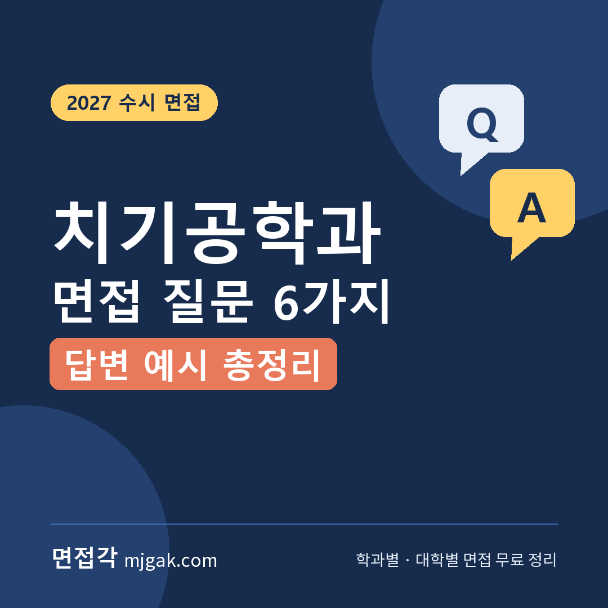
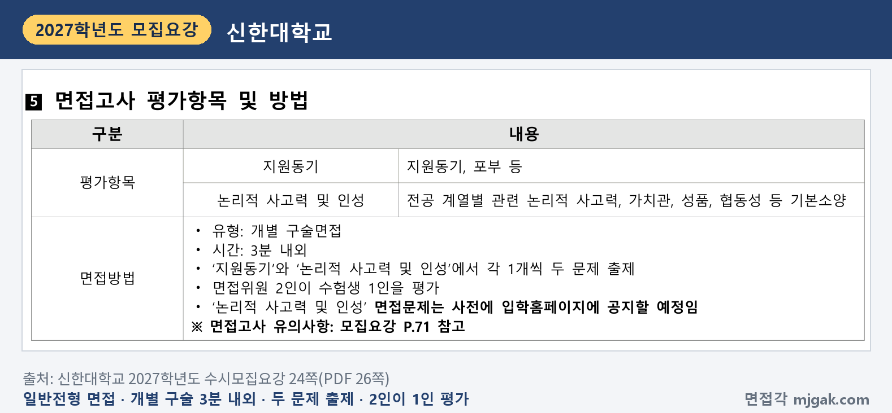
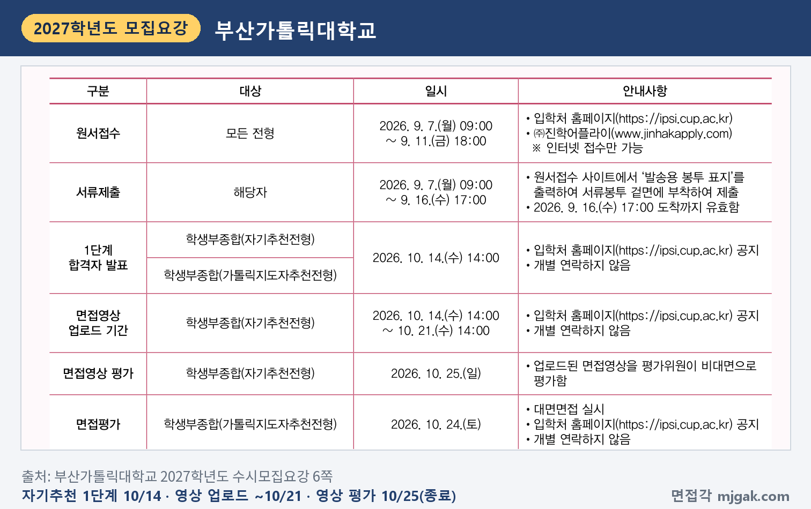
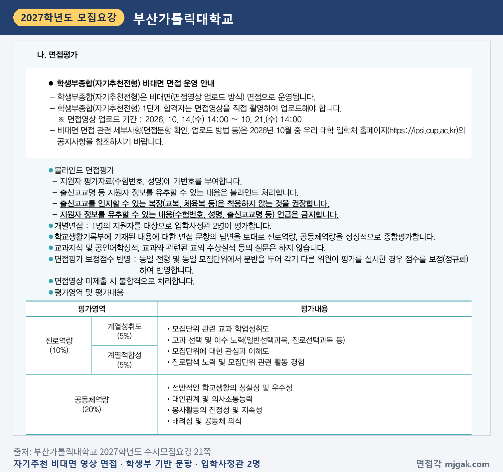
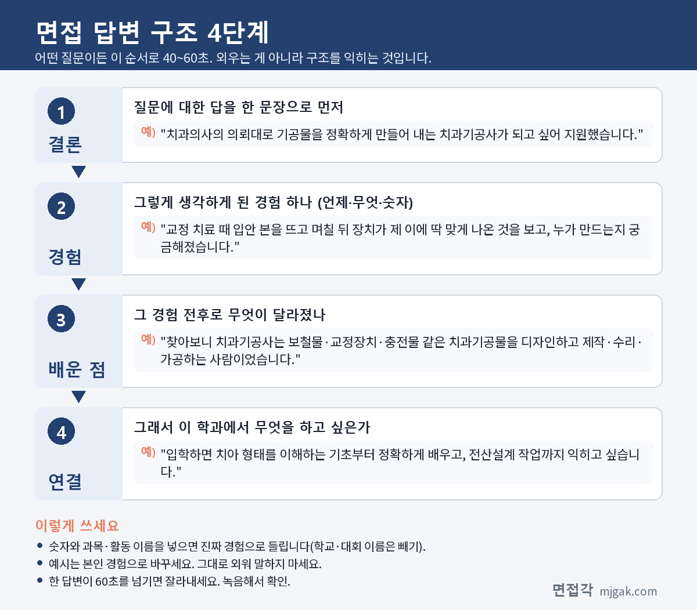

Ctrl+V (서식 유지됨)제목
본문 (이 영역 전체가 복사됩니다)
📷 여기에 이미지 넣기 — 썸네일 — thumb-dentaltech.png (대표 이미지로 지정)
치기공학과 면접 답을 세우는 기준은 법에 적힌 치과기공사의 일입니다. 의료기사 등에 관한 법률은 치과기공사의 업무를 '보철물의 제작, 수리 또는 가공'으로 정하고, 치과기공사는 치과의사가 발행한 치과기공물제작의뢰서에 따라 일해야 합니다(같은 법 제11조의3). 한국보건의료인국가시험원 안내는 교정장치·충전물·작업 모형, 보철물, 임플란트 맞춤 지대주·상부구조 같은 치과기공물을 전산설계(CAD/CAM), 3D프린터, 주조기 등으로 디자인·제작·수리·가공한다고 설명합니다. 2027학년도 수시에서 치기공학과 면접을 본 신한대와 부산가톨릭대의 면접 일정은 2026년 10월에 모두 끝났습니다. 그래서 이 글은 두 대학이 2027학년도에 면접을 어떻게 봤는지 기록하고, 2028학년도에 지원할 학생이 미리 준비할 질문 6가지와 답변 예시, 답변 4단계, 시기별 준비 순서, 자주 묻는 것들을 정리했습니다. 2028학년도 수시로 치기공학과를 생각하는 학생이 읽으시면 됩니다.
1. 치기공학과 면접, 2027학년도에는 어떻게 봤나
2027학년도 수시모집요강에서 치기공학과 면접을 확인한 대학은 두 곳입니다. 신한대는 학생부교과 일반전형에서 교과 60%에 면접 40%를 더했고, 부산가톨릭대는 학생부종합 자기추천전형에서 1단계 서류 뒤 면접 30%를 반영하면서 면접을 영상으로 받았습니다. 두 대학 모두 2027학년도 면접은 끝났으니, 아래 내용은 2028학년도 모집요강을 읽을 때 비교 기준으로 쓰세요.
신한대학교 학생부교과 일반전형 치기공학과는 의정부캠퍼스에서 25명을 뽑았습니다(22쪽). 학생부 교과성적 60%와 면접 40%를 합산하고(23쪽), 수능 최저학력기준은 없습니다(24쪽). 면접은 개별 구술면접으로 3분 내외이고, 면접위원 2인이 수험생 1인을 평가합니다. 평가항목은 '지원동기(지원동기, 포부 등)'와 '논리적 사고력 및 인성(전공 계열별 관련 논리적 사고력, 가치관, 성품, 협동성 등 기본소양)'이고, 항목마다 1문제씩 냈습니다. '논리적 사고력 및 인성' 문제는 입학홈페이지에 미리 공지한다고 적혀 있습니다(24쪽). 면접은 블라인드로 진행됐습니다(71쪽). 면접일은 10월 3일(토)~4일(일), 10월 10일(토)~11일(일) 중 모집단위별로 정해졌습니다(18쪽).
📷 여기에 이미지 넣기 — 캡처 1 — 신한대학교 2027학년도 수시모집요강 24쪽(PDF 26쪽): shinhan-2027-dentaltech-interview.png
부산가톨릭대학교 학생부종합 자기추천전형 치기공학과는 7명이었습니다. 모집요강 5쪽 표에는 치기공학과가 청년해외취업프로그램(K-MOVE) 수행기관 선정 학과로 표시돼 있습니다(5쪽). 1단계는 서류 100%로 5배수, 2단계는 1단계 성적 70%에 면접 30%이고 수능 최저는 없습니다(20쪽). 5배수를 적용하면 1단계 합격 규모는 35명입니다(이 글에서 계산한 값). 1단계 발표는 10월 14일(수) 14:00, 면접영상 업로드는 10월 14일(수) 14:00부터 10월 21일(수) 14:00까지, 영상 평가는 10월 25일(일)이었습니다(6쪽).
📷 여기에 이미지 넣기 — 캡처 2 — 부산가톨릭대학교 2027학년도 수시모집요강 6쪽: cup-2027-dentaltech-schedule.png
자기추천전형 면접은 1단계 합격자가 면접영상을 직접 촬영해 올리는 비대면 방식입니다. 학교생활기록부 내용에 대한 문항의 답변을 입학사정관 2명이 평가하고, 반영 비율은 전형 총점 기준으로 진로역량 10%(계열성취도 5%, 계열적합성 5%)와 공동체역량 20%입니다. 교과지식, 공인어학성적, 교과와 관련된 교외 수상실적 등은 묻지 않고, 영상을 내지 않으면 불합격입니다(21쪽).
📷 여기에 이미지 넣기 — 캡처 3 — 부산가톨릭대학교 2027학년도 수시모집요강 21쪽: cup-2027-dentaltech-interview.png
부산가톨릭대는 가톨릭지도자추천전형으로도 치기공학과 3명을 뽑았습니다. 가톨릭 사제·수도회 장상 또는 가톨릭계 교육기관장의 추천을 받은 사람이 지원할 수 있고, 가톨릭 신자가 아니어도 됩니다. 1단계 서류 100% 5배수, 2단계 1단계 70%에 면접 30%이고, 면접은 10월 24일(토) 대면 개별면접이었습니다(5·6·23·24쪽).
두 대학을 나란히 놓으면 방향이 보입니다. 신한대는 교과성적에 3분 내외의 구술면접을 더하고, 지원동기와 인성에서 한 문제씩 냈습니다. 부산가톨릭대는 학생부에 적힌 내용을 묻는 학종 면접이라, 내 학생부의 만들기·측정·치아 관련 활동을 내 말로 설명하는 준비가 중심입니다(21쪽). 두 곳 모두 치기공학과 해당 전형에 수능 최저가 없었습니다. 참고로 신한대 학생부우수자전형(치기공학과 18명)은 교과 100%, 신한국인전형(학생부종합)은 학교생활기록부 평가로 뽑아 면접이 없었습니다(26·27·36·37쪽). 2028학년도의 방식과 날짜는 2028학년도 모집요강이 나오면 반드시 다시 확인하세요.
2. 치기공학과 면접 질문 6가지와 답변 예시
예시 답변은 답변 구조를 보여 주기 위한 가상의 예시입니다. 그대로 외우지 말고 본인 경험으로 바꿔 쓰세요. 공통 원칙은 하나입니다. "환자를 직접 진료하는 사람이 아니라, 치과의사의 의뢰서에 따라 기공물을 정확하게 만드는 사람으로, 법에 정해진 업무 범위 안에서 말한다."
▶ 질문 1. 치과기공사가 되고 싶은 이유는 무엇인가요? 치과기공사는 어떤 일을 하나요?
왜 묻나: 왜 지원했는지와 치과기공사의 일을 얼마나 알아봤는지를 한 번에 묻는 질문입니다. 신한대는 면접 평가항목에 '지원동기(지원동기, 포부 등)'를 따로 두었고(24쪽), 부산가톨릭대 면접 진로역량에는 '모집단위에 대한 관심과 이해도'가 있습니다(21쪽).
답변 구조: 계기가 된 구체적 경험 → 찾아보고 알게 된 치과기공사의 업무(법·공식 안내에 적힌 범위) → 가장 관심 있는 분야 → 입학 후 배우고 싶은 것.
답변 예시:
"교정 치료를 받으면서 입안 본을 뜨고 며칠 뒤에 장치가 제 이에 딱 맞게 나온 것을 보고, 이걸 누가 만드는지 궁금해졌습니다. 찾아보니 치과기공사가 치과의사의 의뢰에 따라 보철물, 교정장치, 충전물 같은 치과기공물을 디자인하고 제작·수리·가공하는 사람이었습니다. 전산설계나 3D프린터로도 작업한다는 점이 특히 흥미로웠습니다. 입학하면 치아의 형태를 이해하는 기초부터 정확하게 배우고 싶습니다."
주의: '손재주가 좋아서'만으로는 어떤 일을 하는 직업인지 드러나지 않습니다. 직접 찾아본 업무를 넣고, 확인하지 않은 업무는 빼세요.
▶ 질문 2. 치과기공사는 치과의사, 치과위생사와 어떻게 다르다고 생각하나요?
왜 묻나: 직업 사이의 업무 경계를 정확히 아는지 묻는 질문입니다. 부산가톨릭대 면접의 진로역량(계열적합성), 신한대 면접의 '전공 계열별 관련 논리적 사고력'과 이어집니다.
답변 구조: 법에 정해진 치과기공사의 업무 → 같은 법에 적힌 치과위생사의 업무 → 치과의사가 발행한 의뢰서에 따라 일한다는 관계 → 그래서 치과기공사에게 필요한 태도.
답변 예시:
"의료기사 등에 관한 법률을 찾아보니 치과기공사의 업무는 보철물의 제작, 수리 또는 가공이고, 치과위생사는 치아와 구강질환의 예방과 위생 관리 등을 맡는다고 나와 있었습니다. 또 치과기공사는 치과의사가 발행한 치과기공물제작의뢰서에 따라 일해야 합니다. 그래서 치과기공사는 의뢰서에 적힌 내용을 정확히 읽고 그대로 만들어 내는 책임이 크다고 생각합니다."
주의: 치과기공사가 환자를 직접 진료하거나 치료한다고 말하면 법과 다릅니다. 법에 적힌 업무와 의뢰서 관계 안에서 답하세요.
📷 여기에 이미지 넣기 — 이미지 1 — 제미나이 생성: 치기공 실습실 작업대에서 석고 치아 모형·교합기·왁스 조각도 옆에서 답하는 남학생(실사) / "제미나이 프롬프트 1"
(AI로 만든 이미지로, 실제와 다를 수 있습니다)
▶ 질문 3. 완성한 기공물이 모형에 잘 맞지 않는다는 것을 보내기 직전에 발견했다면 어떻게 하겠습니까?
왜 묻나: 책임감과 판단력을 묻는 상황 질문입니다. 신한대는 '논리적 사고력 및 인성(가치관, 성품, 협동성 등 기본소양)'에서 한 문제를 냈습니다(24쪽).
답변 구조: 어디가 맞지 않는지 확인한다 → 숨기지 않고 책임자에게 알린다 → 다시 만들 일정을 의뢰한 쪽과 함께 정한다 → 원인을 되짚어 기록한다.
답변 예시:
"먼저 어느 부분이 얼마나 맞지 않는지 정확히 확인하겠습니다. 시간이 촉박해도 맞지 않는 기공물을 그대로 보내면 결국 환자가 불편을 겪고 다시 만들어야 하니, 바로 선배나 책임자에게 알리고 의뢰한 치과에 언제까지 다시 보낼 수 있는지 함께 정하겠습니다. 다시 만든 뒤에는 어느 단계에서 어긋났는지 기록해 두고 같은 실수를 반복하지 않겠습니다."
주의: '밤을 새워서라도 해내겠다'는 의지만으로는 어떻게 판단했는지가 빠집니다. 확인 → 보고 → 다시 제작 → 원인 기록 순서를 지키세요.
▶ 질문 4. 학생부 활동 가운데 치기공학과와 가장 가까운 것은 무엇이고, 그 활동에서 무엇을 배웠나요?
왜 묻나: 학생부에 적힌 내용을 바탕으로 묻는 질문입니다. 부산가톨릭대는 학교생활기록부에 기재된 내용에 대한 면접 문항으로 진로역량과 공동체역량을 평가하고, 교과지식·공인어학성적·교과 관련 교외 수상실적은 묻지 않는다고 적었습니다(21쪽).
답변 구조: 활동 이름과 시기 → 내가 한 일 → 어려웠던 점과 바꾼 방법 → 배운 점 → 그 뒤 이어진 행동.
답변 예시:
"2학년 미술 시간에 점토로 손 모형을 만드는 과제를 했는데, 손가락 마디 비율이 계속 어긋나 여러 번 다시 만들었습니다. 눈대중으로 만들던 방식을 바꿔 사진을 보고 길이를 재면서 비율을 맞추자 완성할 수 있었고, 정밀한 작업일수록 측정이 먼저라는 것을 배웠습니다. 그 뒤 생명과학 시간에 치아의 구조를 배우면서 치아마다 모양이 다르다는 것이 흥미로워 치아 형태를 더 찾아보았습니다."
주의: 학생부에 적힌 사실 그대로 말하고 부풀리지 마세요. 교외 수상실적, 자격증 취득 사실, 특정 기관명 등을 말하면 감점이나 불이익을 주는 대학도 있습니다(예: 한림대 2027학년도 요강 91·92쪽). 수업과 교내 활동에서 한 일 중심으로 정리하세요.
▶ 질문 5. 오랜 시간 집중해 꼼꼼한 작업을 끝까지 해낸 경험이 있나요?
왜 묻나: 성실성과 끈기를 묻는 경험 질문입니다. 부산가톨릭대 면접의 공동체역량(전반적인 학교생활의 성실성 및 우수성), 신한대 면접의 '성품'과 이어집니다.
답변 구조: 상황과 목표 → 막혔던 지점 → 내가 바꾼 방법 → 결과 → 배운 점.
답변 예시:
"기술·가정 시간에 작은 나무 상자를 만드는 과제가 있었는데, 다 만들고 보니 뚜껑이 한쪽으로 들떠서 닫히지 않았습니다. 처음부터 다시 만들기보다 어디가 틀어졌는지 자로 하나씩 재 보니 옆판 하나가 2mm 정도 길었습니다. 그 판만 다시 다듬어 맞췄고, 그 뒤로는 자르기 전에 치수를 두 번 확인합니다. 끝까지 원인을 찾는 것이 처음부터 다시 하는 것보다 정확하다는 것을 배웠습니다."
주의: '꼼꼼한 성격입니다'라는 자기 평가는 근거가 되지 않습니다. 막혔던 지점과 내가 바꾼 방법 하나를 넣으세요.
▶ 질문 6. 치과기공사가 되려면 어떤 과정을 거치나요? 졸업 후 어떤 일을 하고 싶나요?
왜 묻나: 치과기공사가 되는 과정과 졸업 뒤 계획을 확인하고 지원했는지 묻습니다. 신한대의 '지원동기, 포부', 부산가톨릭대의 '진로탐색 노력 및 모집단위 관련 활동 경험'과 이어집니다.
답변 구조: 자격 과정(관련 학문 전공과 현장실습과목 이수 → 국가시험 합격 → 면허) → 하고 싶은 일 → 장기 목표.
답변 예시:
"의료기사 등에 관한 법률에 따라 대학에서 관련 보건의료 학문을 전공하고 정해진 현장실습과목을 이수해 졸업한 뒤, 국가시험에 합격하고 면허를 받아야 치과기공사가 될 수 있다고 알고 있습니다. 국가시험은 필기시험과 실기시험으로 나뉘고, 실기시험은 필기시험에 합격한 사람만 봅니다. 졸업 후에는 여러 종류의 기공물을 만들어 보며 기본기를 쌓고, 장기적으로는 전산설계 작업을 더 깊이 공부하고 싶습니다."
주의: 학과를 졸업하는 것만으로 치과기공사가 되지는 않습니다. 국가시험과 면허 단계를 빠뜨리지 말고, 진로는 직접 확인한 분야만 말하세요.
3. 답변은 이 4단계로 만드세요
어떤 질문이든 결론 → 경험 → 배운 점 → 연결, 이 순서로 40~60초 안에 말하면 됩니다. 2027학년도 신한대처럼 3분 내외에 두 문제를 내는 면접이라면 이 길이를 더 짧게 줄여 연습하세요. 아래 도식은 질문 1을 4단계로 나눈 것입니다.
📷 여기에 이미지 넣기 — 도식 — structure-dentaltech.png
4. 2028학년도 치기공학과 면접 준비 순서
고2 겨울방학: 치과기공사의 법적 업무(보철물의 제작·수리·가공, 치과기공물제작의뢰서에 따른 업무)와 국가시험·면허 과정을 한 장으로 정리하고, 질문 1·2·6 초안을 씁니다.
고3 1학기: 수업 시간의 만들기·측정·실험 활동과 치아·구강 관련 탐구를 '한 일 → 바꾼 방법 → 배운 점'으로 그때그때 적어 둡니다. 학생부를 바탕으로 묻는 학종 면접을 대비하는 기록입니다.
2028학년도 수시모집요강이 나오면: 지원 대학의 치기공학과 전형마다 면접이 있는지, 교과 면접인지 학종 면접인지, 대면인지 영상 업로드인지, 면접 시간·비중·평가 항목·날짜, 블라인드·복장 규정을 표로 정리합니다. 2027학년도 신한대처럼 인성 문제를 입학홈페이지에 미리 공지하는 대학은 공지 시기도 적어 둡니다.
면접 2주 전부터는 이렇게 나눠 연습하세요.
1~2일차: 정리한 표를 다시 보고 지원 대학 면접 형식에 맞춰 답 길이를 정합니다. 미리 공지된 문제가 있으면 그것부터 봅니다.
3~4일차: 지원 동기(질문 1)와 자격 과정·진로(질문 6)를 내 경험으로 마무리합니다. 치과기공사의 법적 업무와 국가시험·면허 과정을 정확히 넣고 40~60초로 맞춥니다.
5~6일차: 질문 2(치과의사·치과위생사와의 차이)를 준비합니다. 법에 적힌 업무와 치과기공물제작의뢰서에 따라 일한다는 점을 정확히 외웁니다.
7~8일차: 학생부를 다시 읽고 손으로 만드는 활동, 측정·실험 활동, 치아·구강 관련 탐구마다 '한 일 → 바꾼 방법 → 배운 점'을 한 줄씩 적습니다.
9~10일차: 질문 3(상황)과 질문 5(경험)를 비슷한 장면 몇 가지로 바꿔 말해 봅니다. 마감이 겹친 경우, 동료의 실수를 발견한 경우, 의뢰 내용이 헷갈리는 경우처럼요.
11~12일차: 타이머를 켜고 모의 면접을 합니다. 3분 안팎의 짧은 면접이면 답 하나를 40초 안쪽으로 줄이고, 영상 면접이면 직접 녹화해 보면서 확인하지 않은 사실을 말한 부분을 지웁니다.
전날: 답변을 새로 만들지 않습니다. 수험표와 신분증, 요강의 블라인드·복장 규정을 다시 확인하고 일찍 쉽니다.
5. 2027학년도 치기공학과 면접은 언제 봤나
날짜순으로 보면 다음과 같습니다. 모두 2026년이고, 전부 끝난 일정입니다.
- 10월 3일(토)~4일(일), 10일(토)~11일(일) 중 모집단위별: 신한대 일반전형 면접(18쪽)
- 10월 14일(수) 14:00: 부산가톨릭대 자기추천전형 1단계 발표, 면접영상 업로드 시작(6쪽)
- 10월 21일(수) 14:00: 부산가톨릭대 자기추천전형 면접영상 업로드 마감(6쪽)
- 10월 24일(토): 부산가톨릭대 가톨릭지도자추천전형 대면면접(6쪽)
- 10월 25일(일): 부산가톨릭대 자기추천전형 영상 평가(6쪽)
2027학년도에는 두 대학 면접이 모두 수능(11월 19일) 전인 10월에 있었습니다. 2028학년도에도 비슷한 시기라면 원서를 내기 전에 질문 1~6 초안을 끝내 두세요. 정확한 날짜는 2028학년도 모집요강에서 확인해야 합니다.
6. 치기공학과 면접 자주 묻는 것들
Q. 치기공학과를 졸업하면 바로 치과기공사가 되나요?
A. 아닙니다. 의료기사 등에 관한 법률 제4조 기준으로는 대학 등에서 관련 보건의료 학문을 전공하고 보건복지부령으로 정하는 현장실습과목을 이수해 졸업하는 것이 먼저이고, 그다음 국가시험에 합격해 보건복지부장관의 면허를 받아야 치과기공사가 됩니다.
Q. 치과기공사 국가시험은 어떻게 보나요?
A. 같은 법 시행령 제3조·제4조에 따라 국가시험은 필기시험과 실기시험으로 나뉘고, 실기시험은 필기시험 합격자만 봅니다. 시험은 한국보건의료인국가시험원이 관리하며, 일정과 실기시험 준비물은 국시원 홈페이지의 직종별 시험정보(치과기공사)에 공고됩니다.
Q. 치과기공사는 치과기공소를 직접 열 수 있나요?
A. 의료기사 등에 관한 법률 제11조의2는 치과의사 또는 치과기공사가 아니면 치과기공소를 개설할 수 없고, 1개소만 개설할 수 있다고 정합니다. 개설하려면 관할 시장·군수·구청장 등에게 개설등록을 하고 정해진 시설과 장비를 갖춰야 합니다.
Q. 수능 최저가 있나요?
A. 2027학년도 신한대 일반전형과 부산가톨릭대 자기추천전형의 치기공학과는 수능 최저가 없었습니다(24·20쪽). 대학과 전형마다 다르니 2028학년도 요강에서 지원 전형별로 확인하세요.
Q. 면접 복장 규정이 있나요?
A. 신한대 모집요강은 면접고사 유의사항에 "수험생의 본분에 맞는 단정한 복장 착용을 권장합니다"라고 적었습니다(71쪽). 부산가톨릭대 모집요강은 "출신고교를 인지할 수 있는 복장(교복, 체육복 등)은 착용하지 않는 것을 권장합니다"라고 적고, 수험번호·성명·출신고교명 등 지원자 정보를 유추할 수 있는 내용의 언급을 금지합니다(21쪽).
7. 면접 전날 체크리스트
□ 지원 동기를 "경험 → 치과기공사의 법적 업무 → 관심 분야"로 60초 안에 말할 수 있다
□ 치과기공사·치과위생사의 법적 업무 차이와 치과기공물제작의뢰서에 따라 일한다는 점을 말할 수 있다
□ 국가시험(필기·실기)과 면허까지의 자격 과정을 법에 적힌 대로 말할 수 있다
□ 맞지 않는 기공물 상황에 "확인 → 보고 → 다시 제작 → 원인 기록" 순서로 답할 수 있다
□ 학생부의 만들기·측정 활동을 '한 일 → 바꾼 방법 → 배운 점'으로 설명할 수 있다
□ 이름·수험번호·출신고교명이 답변에 나오지 않는다
□ 지원 대학 면접 형식(대면·영상, 시간, 비중, 평가 항목)과 날짜, 블라인드·복장 규정을 확인했고 수험표·신분증을 챙겼다
8. 함께 보면 좋은 글
치기공학과 면접은 손재주를 자랑하는 자리라기보다, 의뢰서에 적힌 대로 정확하게 만들고 어긋난 것을 숨기지 않는 사람인지를 내 경험으로 설명하는 자리입니다.
※ 이 글의 모집요강 내용은 신한대학교, 부산가톨릭대학교 2027학년도 수시모집요강에서 인용했습니다. 괄호 안 쪽수는 각 모집요강에 인쇄된 쪽수입니다. 질문 6가지는 평가 항목을 바탕으로 정리한 예상 질문이며 대학이 공개한 질문이 아닙니다. 2028학년도 면접 방식과 일정은 달라질 수 있으니 지원 대학 입학처 공지를 꼭 확인하세요.
면접각은 치기공학과를 포함한 학과별 면접 질문·답변 예시와 대학별 2027학년도 면접 정보, 대학이 공개한 면접 기출을 무료로 모아 둔 사이트입니다. 회원가입 없이 볼 수 있고, 질문을 무작위로 뽑아 60초 타이머로 연습하는 모의 면접도 있습니다.
태그 (#은 에디터가 자동으로 붙이므로 그대로 붙여 넣어도 됩니다)
넣을 이미지 목록 (docs/promo/img 폴더)





제미나이 프롬프트 1 — 치기공 실습실 작업대에서 석고 치아 모형·교합기·왁스 조각도 옆에서 답하는 남학생(실사) (4:3) — 제미나이에 그대로 붙여 넣어 이미지를 만드세요